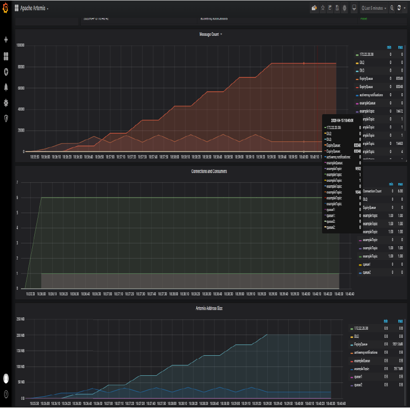

Prometheus¶
- Introduction
- Promgen
- Promcat Resource Catalog
- Prometheus Demo
- Prometheus Storage
- Prometheus SLO Service Level Objectives
- Collectors. Software exposing Prometheus metrics
- Prometheus Alarms and Event Tracking
- Prometheus and Cloud Monitoring
- Prometheus Installers
- Prometheus Operator
- Prometheus SaaS Solutions
- Proof of Concept: ActiveMQ Monitoring with Prometheus
- Prometheus and Azure
- Videos
Introduction¶
- prometheus.io
- dzone.com: Monitoring with Prometheus Learn how to set up a basic instance of Prometheus along with Grafana and the Node Exporter to monitor a simple Linux server.
- github.com/prometheus/prometheus
- Monitoring With Prometheus
- Dzone Refcard: Scaling and Augmenting Prometheus Prometheus is an open-source infrastructure and services monitoring system popular for Kubernetes and cloud-native services and apps. It can help make metric collection easier, correlate events and alerts, provide security, and do troubleshooting and tracing at scale. This Refcard will teach you how to pave the path for Prometheus adoption, what observability looks like beyond Prometheus, and how Prometheus helps provide scalability, high availability, and long-term storage.
- Monitoring Self-Destructing Apps Using Prometheus Learn how to configure Prometheus collectors and their use cases.
- Monitoring kubernetes with Prometheus
- Focus on Detection: Prometheus and the Case for Time Series Analysis
- Ensure High Availability and Uptime With Kubernetes Horizontal Pod Autoscaler (HPA) and Prometheus
- Prometheus 2 Times Series Storage Performance Analyses
- Set Up and Integrate Prometheus With Grafana for Monitoring. How to set up and configure Prometheus and Grafana to enable application performance monitoring for REST applications.
- Discover Applications Running on Kubernetes With Prometheus
- Prometheus vs. Graphite: Which Should You Choose for Time Series or Monitoring?
- PromQL Tutorial
- How to use Ansible to set up system monitoring with Prometheus
- Initial experiences with the Prometheus monitoring system
- prometheus.io/docs/instrumenting/writing_exporters/
- devconnected.com/complete-node-exporter-mastery-with-prometheus/
- www.scalyr.com/blog/prometheus-metrics-by-example/
- Prometheus es un “time series DBMS” y sistema de monitorizacin completo, que incluye recogida de datos, almacenamiento, visualizacin y exportacin.
- La arquitectura de Prometheus se basa en “pull metrics” (extraccin de mtricas). En lugar de empujar las mtricas (“pushing metrics”) hacia la herramienta de monitorizacin, extrae (“pull”) las mtricas de los servicios (por defecto un “/metrics” HTTP endpoint) en texto plano (parseable por humanos y de fcil diagnstico). Prometheus tambin tiene un “push gateway”, de modo que tambin soporta “push” para mtricas especficas cuando el modelo de “pull” no funciona (si bien este mtodo no es recomendable).
- Prometheus se puede conectar a series de tiempo (time series) con un nombre de mtrica y pares clave-valor, simplificando la monitorizacin en complejos entornos cloud multi-nodo.
- La herramienta tambin proporciona PromQL, para el procesado de datos “time-series”. Permite realizar consultas (queries) para la manipulacin de datos y generar nueva informacin relevante. Con PromQL se pueden generar grficos, visualizar conjuntos de datos, crear tablas, y generar alertas basadas en parmetros especficos.
- La consola web de Prometheus permite gestionar todas las caractersticas y herramientas disponibles en Prometheus. Se pueden utilizar expresiones regulares y consultas avanzadas de PromQL para la creacin de conjuntos de datos (datasets) y alertas.
- Prometheus activamente “scrapea” datos, los almacena, y soporta “queries”, “grficos” y “alertas”, as como proporciona “endpoints” a otros consumidores API como Grafana. Todo esto lo realiza con los siguientes componentes:
- Libreras cliente: instrumentacin del cdigo de aplicacin (para generar eventos).
- Servidor Prometheus: “scrapeando” y almacenando estos eventos, cuando se generan, como “time series data”. Este es el modelo “pull” ms comn para la recogida general de mtricas en Prometheus.
- Pushgateway: Modelo “Push”, soportando trabajos efmeros de importacin de datos. Slo recomendable en aplicaciones “serverless”, donde las aplicaciones son lanzadas y destruidas bajo demanda, as como las aplicaciones que manejan “batch jobs”.
- Exportadores de Datos: exportando servicios como HAProxy, StatsD, Graphite, etc.
- Prometheus se diferencia de otros sistemas de monitorizacin con las siguientes funcionalidades:
- Modelo de datos multi-dimensional, donde los “time-series data” se definen por el nombre de la mtrica y dimensiones clave/valor.
- Nodos nicos de servidor y autnomos, sin dependencia de almacenamiento distribuido.
- Recogida de datos via un modelo “pull” sobre HTTP.
- “Time Series Data” empujado (“pushed”) a otros destinos de datos va un gateway intermediario.
- “Targets” descubiertos via “service discovery” configuracin esttica.
- Soporte de federacin horizontal y vertical.
- magalix.com: Monitoring of Kubernetes Clusters To Manage Large Scale Projects
- Cloud Native Monitoring with Prometheus
- itnext.io - Prometheus: yet-another-cloudwatch-exporter collecting AWS CloudWatch metrics
- medium: Kubernetes Lessons in Alerting Live issues are a great opportunity to learn and improve. Heres what happened to us
- Prometheus Monitoring Ecosystem Begins to Mature
- learnsteps.com: Monitoring Infrastructure System Design
- ganeshvernekar.com: Prometheus TSDB (Part 1): The Head Block
- ganeshvernekar.com: Prometheus TSDB (Part 2): WAL and Checkpoint
- ganeshvernekar.com: Prometheus TSDB (Part 3): Memory Mapping of Head Chunks from Disk
- ganeshvernekar.com: Prometheus TSDB (Part 4): Persistent Block and its Index
- youtube playlist: How to setup Prometheus
- learndevops.substack.com: Hitting prometheus API with curl and jq Determine offending pods that use more RAM than requested, causing OOM.
- devclass.com: Safetyfirst? Prometheus 2.24 finally features TLS on HTTP serving endpoints
- sysadminxpert.com: Steps to Monitor Linux Server using Prometheus
- medium.com: Prometheus-Grafana : Node Monitoring on Kubernetes
- zerodha.tech: Infrastructure monitoring with Prometheus at Zerodha
- devopscube.com: How to Setup Prometheus Monitoring On Kubernetes Cluster
- prometheus-operator.dev
- gabrieltanner.org: Golang Application monitoring using Prometheus
- promlens.com The power tool for querying Prometheus. Build, understand, and fix your queries much more effectively with the ultimate query builder for PromQL
- timber.io: PromQL For Humans
- medium: Prometheus monitoring with Elastic Stack in Kubernetes Monitoring is one of the key components for managing large clusters. For this, we have several tools.
- grafana.com: How we use metamonitoring Prometheus servers to monitor all other Prometheus servers at Grafana Labs If you rely on Prometheus for your monitoring, and your monitoring fails, how will you know? Learn how to set up Prometheus servers to monitor all other Prometheus servers
- portworx.com: Monitoring Kubernetes Backup with Prometheus and Grafana
- sysdig.com: Top 10 metrics in PostgreSQL monitoring with Prometheus
- itnext.io: Observability at Scale
- jonbc.medium.com: Hacking your way to Observability Part 1 : Metrics Starting your journey in observability by gathering metrics with Prometheus
- innoq.com: Scraping a Docker swarm service with Prometheus
- opensource.com: Run Prometheus at home in a container
- faun.pub: Production grade Kubernetes Monitoring using Prometheus
- howtoforge.com: How to Install Prometheus System Monitoring Tool on Ubuntu 20.04
- cribl.io: Using Prometheus for Agentless Monitoring
- logz.io: Guide to Monitoring AWS Lambda Metrics with Prometheus & Logz.io
- aprenderbigdata.com: Prometheus: Introduccin a la Monitorizacin de Mtricas
- tech.marksblogg.com: Monitor ClickHouse column oriented database with Prometheus & Grafana
- karma Alert dashboard for Prometheus Alertmanager
- Alertmanager 0.23.0-rc.0 with awscloud SNS support is available for testing. There are also bugfixes and features for amtool
- youtube: Monitoring your k6 load test: how to install Grafana and Prometheus on a Kubernetes cluster
- blog.couchbase.com: How to Build Observability Dashboards with Prometheus, Grafana & Couchbase
- sysdig.com: How to monitor Redis with Prometheus
- jfrog.com: Dont let Prometheus Steal your Fire Real world secrets exposed by unsafe defaults

Promgen¶
- Promgen Promgen is a configuration file generator for Prometheus
Promcat Resource Catalog¶
Prometheus Demo¶
Prometheus Storage¶
- Proporciona etiquetado clave-valor y “time-series”. La propia documentacin de Prometheus explica cmo se gestiona el almacenamiento en disco (Prometheus Time-Series DB). La ingestin de datos se agrupa en bloques de dos horas, donde cada bloque es un directorio conteniendo uno o ms “chunk files” (los datos), adems de un fichero de metadatos y un fichero index:
- Almacenamiento de datos en disco (Prometheus Time-Series DB):
./data/01BKGV7JBM69T2G1BGBGM6KB12 ./data/01BKGV7JBM69T2G1BGBGM6KB12/meta.json ./data/01BKGV7JBM69T2G1BGBGM6KB12/wal ./data/01BKGV7JBM69T2G1BGBGM6KB12/wal/000002 ./data/01BKGV7JBM69T2G1BGBGM6KB12/wal/000001 - Un proceso en segundo plano compacta los bloques de dos horas en otros ms grandes.
- Es posible almacenar los datos en otras soluciones de “Time-Series Database” como InfluxDB.
Prometheus SLO Service Level Objectives¶
- Sloth Easy and simple Prometheus SLO (service level objectives) generator
- PromTools: SLOs with Prometheus Multiple Burn Rate Alerts. This page will generate, with the data you provide in the form, the necessary Prometheus alerting and recording rules for Multiple Burn Rate which you might know from The Site Reliability Workbook. These rules will evaluate based on the available metrics in the last 30 days.
- slo-libsonnet Generate Prometheus alerting & recording rules and Grafana dashboards for your SLOs.
- opensource.google: Prometheus SLO example An end to end example of implementing SLOs with Prometheus, Grafana and Go
- SLO Generator SLO Generator is a tool to compute SLIs, SLOs, Error Budgets and Burn rate and export an SLO report to supported exporters.
Scalability, High Availability (HA) and Long-Term Storage¶
- Prometheus fue diseado para ser fcil de desplegar. Es extremadamente fcil ponerlo en marcha, recoger algunas mtricas, y empezar a construir nuestra propia herramienta de monitorizacin. Las cosas se complican cuando se intenta operar a un nivel de escalado considerable.
- Para entender si esto va a ser un problema, conviene plantearse las siguiente preguntas:
- Cuntas mtricas puede ingerir el sistema de monitorizacin y cuntas son necesarias?
- Cul es la cardinalidad de las mtricas? La cardinalidad es el nmero de etiquetas que cada mtrica puede tener. Es una cuestin muy frecuente en las mtricas pertenecientes a entornos dinmicos donde a los contenedores se les asignan un ID nombre diferente cada vez que son lanzados, reiniciados o movidos entre nodos (caso de kubernetes).
- Es necesaria la Alta Disponibilidad (HA)?
- Durante cunto tiempo es necesario mantener las mtricas y con qu resolucin?
- La implementacin de HA es laboriosa porque la funcionalidad de cluster requiere aadir plugins de terceros al servidor Prometheus. Es necesario tratar con “backups” y “restores”, y el almacenamiento de mtricas por un periodo de tiempo extendido har que la base de datos crezca exponencialmente. Los servidores Prometheus proporcionan almacenamiento persistente, pero Prometheus no fue creado para el almacenamiento distribuido de mtricas a lo largo de mltiples nodos de un cluster con replicacin y capacidad curativa (como es el caso de Kubernetes). Esto es conocido como “almacenamiento a largo-plazo” (Long-Term) y actualmente es un requisito en unos pocos casos de uso, por ejemplo en la planificacin de la capacidad para monitorizar cmo la infraestructura necesita evolucionar, contracargos para facturar diferentes equipos departamentos para un caso especfico que han hecho de la infraestructura, anlisis de tendencias de uso, o adherirse a regulaciones para verticales especficos como banca, seguros, etc.
Storage Solutions for Prometheus¶
- monitoring2.substack.com: Big Prometheus. Thanos, Cortex, M3DB and VictoriaMetrics at scale
- Prometheus TSDB
- Cortex: Provides horizontally scalable, highly available, multi-tenant, long term storage for Prometheus. Cortex allows for storing time series data in a key-value store like Cassandra, AWS DynamoDB, or Google BigTable. It offers a Prometheus compatible query API, and you can push metrics into a write endpoint. This makes it best suited for cloud environments and multi-tenant scenarios like service providers building hosted and managed platforms.
- Thanos: Open source, highly available Prometheus setup with long term storage capabilities.
- Thanos stores time series data in an object store like AWS S3, Google Cloud Storage, etc. Thanos pushes metrics through a side-car container from each Prometheus server through the gRPC store API to the query service in order to provide a global query view.
- github.com/ruanbekker: Thanos Cluster Setup How to deploy a HA Prometheus setup with Unlimited Data Retention Capabilities on aws cloud S3 with Thanos Metrics.
- Highly Available Prometheus Metrics for Distributed SQL with Thanos on GKE
- infracloud.io: Achieving multi-tenancy in monitoring with Prometheus & the mighty Thanos Receiver
- particule.io: Multi-Cluster Monitoring with Thanos
- prometheus-operator.dev: Thanos and the Prometheus Operator
- Thanos Architecture Overview
- enmilocalfunciona.io: Aprende a configurar Thanos usando docker-compose
- goatlas-io/atlas Atlas provides the ability to easily run a secure distributed Thanos deployment.
- M3: An open source, large-scale metrics platform developed by Uber. It has its own time series database, M3DB. Like Thanos, M3 also uses a side-car container to push the metrics to the DB. In addition, it supports metric deduplication and merging, and provides distributed query support. Although it’s exciting to see attempts to address the challenges of running Prometheus at scale, these are very young projects that are not widely used yet.
- VictoriaMetrics
InfluxDB and InfluxDB Templates¶
- InfluxDB: An open-source time series database (TSDB) developed by InfluxData. It is written in Go and optimized for fast, high-availability storage and retrieval of time series data in fields such as operations monitoring, application metrics, Internet of Things sensor data, and real-time analytics. It also has support for processing data from Graphite.
- en.wikipedia.org/wiki/InfluxDB
- influxdata.com: Building a Metrics & Alerts as a Service (MaaS) Monitoring Solution Using the InfluxDB Stack
- en.wikipedia.org/wiki/MIT_License
- dzone: Flux queries New language being developed at InfluxData.
- influxdb-templates Build and share InfluxDB templates for monitoring solutions that deliver faster time to awesome.
- influxdata.com: Running InfluxDB 2.0 and Telegraf Using Docker
Collectors. Software exposing Prometheus metrics¶
- http://localhost:9090/targets : you should see a list of targets that you Prometheus server is scraping.
Prometheus Exporters. Plug-in architecture and extensibility with Prometheus Exporters (collectors)¶
- Prometheus proporciona un ecosistema de “exporters”, los cuales permiten que herramientas de terceros puedan exportar sus datos en Prometheus. Muchos componentes de software de cdigo abierto son compatibles por defecto.
- exporterhub.io Exporterhub is a curated List of Prometheus Exporters
- Un “exporter” expone las mtricas de uno varios “collectors”.
- Prometheus Exporters
- Prometheus JMX Exporter A process for exposing JMX Beans via HTTP for Prometheus consumption.
- blackbox_exporter The blackbox exporter allows blackbox probing of endpoints over HTTP, HTTPS, DNS, TCP and ICMP.
- Example: How to Use Prometheus Monitoring With Java to Gather Data. Gathering Java Metrics with Prometheus Monitoring (ActiveMQ)
- Maven Prometheus instrumentation library for JVM applications (client library)
- Example: JMX Exporter with ActiveMQ
- k8s-image-availability-exporter is a Prometheus exporter that warns you proactively about images that are defined in Kubernetes objects (e.g., an image field in the Deployment) but are not available in the container registry (such as Docker Registry, etc.).
- engineeringblog.yelp.com: Improving the performance of the Prometheus JMX Exporter
- sysdig.com: How to monitor an Oracle database with Prometheus. The OracleDB Prometheus exporter
- YACE - yet another cloudwatch exporter AWS cloudwatch to prometheus exporter - Discovers services through AWS tags, gets cloudwatch data and provides them as prometheus metrics with AWS tags as labels
- prometheus-community/elasticsearch_exporter Prometheus exporter for various metrics about ElasticSearch, written in Go.
Prometheus Exporters Development. Node Exporter¶
- Node exporter puede ser utilizado para exportar las mtricas de nuestra aplicacin ya que permite exportar un “text-file”. Nuestra aplicacin puede escribir datos en un fichero de texto con el formato de datos de Prometheus. Este fichero de texto con datos agregados sera exportado a Prometheus con Node Exporter.
- dzone.com: Monitoring Self-Destructing Apps Using Prometheus Learn how to configure Prometheus collectors and their use cases.
- prometheus.io: Writing Exporters
- devconnected.com: Complete Node Exporter Mastery with Prometheus
- scalyr.com: Prometheus metrics by example: 5 things you can learn
- aws.amazon.com: Building a Prometheus remote write exporter for the OpenTelemetry Go SDK
Prometheus Third-party Collectors/Exporters¶
- Some third-party software exposes metrics in the Prometheus format, so no separate exporters are needed.
- Prometheus Third Party Exporters
OpenTelemetry Collector¶
- OpenTelemetry Collector
- thenewstack.io: Lightsteps OpenTelemetry Launchers Simplify Integration to Line of Code
- OpenTelemetry Launchers
- thenewstack.io: Demystifying Distributed Traces in OpenTelemetry
- medium: OpenTelemetry Specification v1.0.0, Tracing Edition
- cncf.io: From distributed tracing to APM: Taking OpenTelemetry and Jaeger up a level
- medium: Tracing in eDreams ODIGEO Lodging with Open Telemetry and Grafana Tempo
- newrelic.com: Understand OpenTelemetry Part 4: Instrument a Java App with OpenTelemetry
- https://github.com/jenkinsci/opentelemetry-plugin Publish Jenkins performances metrics to an OpenTelemetry endpoint, including distributed traces of job executions and health metrics of the controller.
- https://github.com/cyrille-leclerc/opentelemetry-maven-extension Maven extension to observe Maven builds as distributed traces using OpenTelemetry
- https://github.com/equinix-labs/otel-cli OpenTelemetry command-line tool for sending events from shell scripts & similar environments
- https://github.com/ansible-collections/community.general/pull/3091 Send distributed traces for the ansible runs with OpenTelemetry
Telegraf Collector¶
- Telegraf Collector
- Telegraf Prometheus Output Plugin
- Telegraf Ansible Role
- Grafana Dashboards with Telegraf Collectors
- dzone: Synthetic Monitoring With Telegraf (white-box monitoring) Monitoring based on metrics exposed by the internals of the system
- grafana.com: Using Telegraf plugins to visualize industrial IoT data with the Grafana Cloud Hosted Prometheus service
- sysadminxpert.com: How to Monitor Linux System with Grafana and Telegraf
- influxdata.com: Three Ways to Keep Cardinality Under Control When Using Telegraf
Micrometer Collector¶
Prometheus Alarms and Event Tracking¶
- Prometheus no soporta rastreo de eventos (event tracking), pero ofrece un soporte completo de alarmas y gestin de alarmas. El lenguaje de consultas (queries) de Prometheus permite en cambio implementar rastreo de eventos por cuenta propia.
Prometheus and Cloud Monitoring¶
- AWS CloudWatch is supported by Prometheus.
Prometheus Installers¶
Binaries, source code or Docker¶
Ansible Roles¶
- Cloud Alchemy: Deploy prometheus node exporter using ansible.
- Idealista: This ansible role installs a Prometheus Node Exporter in a debian environment
- Alexdzyoba: This ansible role installs a Prometheus JMX exporter java agent in a debian nvironment. Inspired by Idealista prometheus_jmx_exporter-role.
- Mesaguy: Installs and manages Prometheus and Prometheus exporters.
- Installs and manages Prometheus server, Alertmanager, PushGateway, and numerous Prometheus exporters
- This role was designed to allow adding new exporters with ease. Regular releases ensure it always provides the latest Prometheus software.
- This role can register client exporters with the Prometheus server/s automatically (see tgroup management below).
- This Ansible role will be migrated to an Ansible Collection.
- galaxy.ansible.com/mesaguy/prometheus
- github.com/mesaguy/ansible-prometheus
- William Yeh: Prometheus for Ansible Galaxy. This role only installs 3 components: Prometheus server, Node exporter, and Alertmanager.
- Undergreen: An Ansible role that installs Prometheus Node Exporter on Ubuntu|Debian|redhat-based machines with systemd|Upstart|sysvinit.
- Mitesh Sharma: Prometheus With Grafana Using Ansible
Prometheus Operator¶
kube Prometheus¶
- kube-prometheus Use Prometheus to monitor Kubernetes and applications running on Kubernetes.
Prometheus Operator with Helm3¶
Kube-prometheus-stack (best choice)¶
- prometheus-community/kube-prometheus-stack kube-prometheus-stack collects Kubernetes manifests, Grafana dashboards, and Prometheus rules combined with documentation and scripts to provide easy to operate end-to-end Kubernetes cluster monitoring with Prometheus using the Prometheus Operator.
Kubernetes Cluster Monitoring Stack based on Prometheus Operator¶
- Cluster Monitoring stack for ARM / X86-64 platforms Updated the cluster-monitoring stack for kubernetes to latest versions. Fresh Grafana 7, Prometheus Operator and more. This repository collects Kubernetes manifests, Grafana dashboards, and Prometheus rules combined with documentation and scripts to provide easy to operate end-to-end Kubernetes cluster monitoring with Prometheus using the Prometheus Operator.
Prometheus SaaS Solutions¶
Proof of Concept: ActiveMQ Monitoring with Prometheus¶
The aim of this Proof of Concept is to learn Prometheus by example being Red Hat AMQ 7 (broker) on RHEL the application to be monitored. Red Hat AMQ Broker is based on ActiveMQ Artemis, being this the reason why one of the following proof of concepts is done with Artemis (the other one was run in order to learn telegraf, prometheus and grafana). The same solution tested with Artemis on RHEL is valid for Red Hat AMQ 7 Broker on RHEL.
Red Hat AMQ 7 Broker is OpenShift 3.11 compliant as Technical Preview and deployed as Operator.
Red Hat AMQ 7 Operator is fully supported in OpenShift 4.x, initially with Prometheus and Grafana monitoring already setup and maintained by AMQ Operator. It is recommended to check the metrics collected and displayed by AMQ Operator with another Proof of Concept in OpenShift 4.x.
PoC: ActiveMQ 5.x Monitoring with Telegraf Collector, Prometheus and Grafana Dashboard 10702¶
- Latest releases of Telegraf and Prometheus have been used in this Proof of Concept:
- telegraf-1.14.0-1 (rpm)
- grafana-6.3.2-1.x86_64 (rpm) This is the release specified as requirement for this grafana dashboard. Newer releases of grafana are probably compliant.
- prometheus-2.17.1.linux-amd64 (.tar.gz)
- apache-activemq-5.15.12 (.tar.g)
- References:
Deployment and Configuration¶
- Systemd
/etc/systemd/system/prometheus.service
/etc/systemd/system/activemq.service
/usr/lib/systemd/system/telegraf.service
/usr/lib/systemd/system/grafana-server.service
- Systemctl
systemctl daemon-reload
for service in activemq telegraf prometheus grafana-server; do systemctl status $service; done
for service in activemq telegraf prometheus grafana-server; do systemctl restart $service; done
for service in activemq telegraf prometheus grafana-server; do systemctl stop $service; done
for service in activemq telegraf prometheus grafana-server; do systemctl start $service; done
- Jolokia Permissions already integrated in ActiveMQ by default. Jolokia permissions have been disabled by renaming “jolokia-access.xml” to “jolokia-access.xmlORIG” (this is a Proof of Concept):
mv /opt/activemq/webapps/api/WEB-INF/classes/jolokia-access.xml /opt/activemq/webapps/api/WEB-INF/classes/jolokia-access.xmlORIG
- Telegraf Jolokia Input Plugin /etc/telegraf/telegraf.d/activemq.conf
[[inputs.jolokia2_agent]]
urls = ["http://localhost:8161/api/jolokia"]
name_prefix = "activemq."
username = "admin"
password = "admin"
### JVM Generic
[[inputs.jolokia2_agent.metric]]
name = "OperatingSystem"
mbean = "java.lang:type=OperatingSystem"
paths = ["ProcessCpuLoad","SystemLoadAverage","SystemCpuLoad"]
[[inputs.jolokia2_agent.metric]]
name = "jvm_runtime"
mbean = "java.lang:type=Runtime"
paths = ["Uptime"]
[[inputs.jolokia2_agent.metric]]
name = "jvm_memory"
mbean = "java.lang:type=Memory"
paths = ["HeapMemoryUsage", "NonHeapMemoryUsage", "ObjectPendingFinalizationCount"]
[[inputs.jolokia2_agent.metric]]
name = "jvm_garbage_collector"
mbean = "java.lang:name=*,type=GarbageCollector"
paths = ["CollectionTime", "CollectionCount"]
tag_keys = ["name"]
[[inputs.jolokia2_agent.metric]]
name = "jvm_memory_pool"
mbean = "java.lang:name=*,type=MemoryPool"
paths = ["Usage", "PeakUsage", "CollectionUsage"]
tag_keys = ["name"]
tag_prefix = "pool_"
### ACTIVEMQ
[[inputs.jolokia2_agent.metric]]
name = "queue"
mbean = "org.apache.activemq:brokerName=*,destinationName=*,destinationType=Queue,type=Broker"
paths = ["QueueSize","EnqueueCount","ConsumerCount","DispatchCount","DequeueCount","ProducerCount","InFlightCount"]
tag_keys = ["brokerName","destinationName"]
[[inputs.jolokia2_agent.metric]]
name = "topic"
mbean = "org.apache.activemq:brokerName=*,destinationName=*,destinationType=Topic,type=Broker"
paths = ["ProducerCount","DequeueCount","ConsumerCount","QueueSize","EnqueueCount"]
tag_keys = ["brokerName","destinationName"]
[[inputs.jolokia2_agent.metric]]
name = "broker"
mbean = "org.apache.activemq:brokerName=*,type=Broker"
paths = ["TotalConsumerCount","TotalMessageCount","TotalEnqueueCount","TotalDequeueCount","MemoryLimit","MemoryPercentUsage","StoreLimi
t","StorePercentUsage","TempPercentUsage","TempLimit"]
tag_keys = ["brokerName"]
- InfluxDB: Not required.
- Defautl /etc/telegraf/telegraf.conf file is modified to allow Prometheus to collect ActiveMQ metrics by pulling Telegraf metrics:
# # Configuration for the Prometheus client to spawn
[[outputs.prometheus_client]]
# ## Address to listen on
listen = ":9273"
## Path to publish the metrics on.
path = "/metrics"
...
...
# # Gather ActiveMQ metrics
[[inputs.activemq]]
# ## ActiveMQ WebConsole URL
url = "http://127.0.0.1:8161"
# ## Credentials for basic HTTP authentication
username = "admin"
password = "admin"
...
...
- scrape_configs in /opt/prometheus/prometheus.yml
scrape_configs:
# The job name is added as a label `job=<job_name>` to any timeseries scraped from this config.
- job_name: 'prometheus'
# metrics_path defaults to '/metrics'
# scheme defaults to 'http'.
static_configs:
- targets: ['localhost:9090']
- job_name: 'broker'
static_configs:
- targets: ['localhost:9273']
- Grafana Dashboard 10702 is imported from Grafana UI -> “import dashboard”. Prometheus data source is connected manually with Grafana via Grafana UI.
PoC: ActiveMQ Artemis Monitoring with Prometheus Metrics Plugin (Micrometer Collector) and Prometheus. Grafana Dashboard not available¶
- Latest releases of ActiveMQ Artemis and Prometheus have been used in this Proof of Concept:
- ActiveMQ Artemis can export metrics to several monitoring systems via Artemis Prometheus Metrics Plugin, which uses Micrometer Collector. Check this link.
- Unfortunately, there’s no Grafana Dashboard available for this plugin. In consequence a new Grafana Dashboard has to be developed from scratch.
- Artemis Prometheus Metrics Plugin is the recommended approach. Use JMX Exporter to export other metrics.
- References:
Deployment and Configuration¶
- systemd
/etc/systemd/system/prometheus.service
/etc/systemd/system/artemis.service
/usr/lib/systemd/system/grafana-server.service
- systemctl
# systemctl enable artemis
# systemctl daemon-reload
for service in artemis prometheus grafana-server; do systemctl status $service; done
for service in artemis prometheus grafana-server; do systemctl restart $service; done
for service in artemis prometheus grafana-server; do systemctl stop $service; done
for service in artemis prometheus grafana-server; do systemctl start $service; done
- Creation of Artemis Broker
cd /var/lib
/opt/artemis/bin/artemis create --addresses 192.168.1.38 --allow-anonymous --home /opt/artemis --host <my_servername.my_domain> --http-host <my_servername.my_domain> --name <my_servername.my_domain> --queues queue1,queue2 --user artemisuser --password artemispassword artemisbroker
Creating ActiveMQ Artemis instance at: /var/lib/artemisbroker
Auto tuning journal ...
done! Your system can make 13.89 writes per millisecond, your journal-buffer-timeout will be 72000
You can now start the broker by executing:
"/var/lib/artemisbroker/bin/artemis" run
Or you can run the broker in the background using:
"/var/lib/artemisbroker/bin/artemis-service" start
- Permissions change in broker directory
# chown -R activemq. /var/lib/artemisbroker/
- Running artemis broker
# su - activemq
$ cd /var/lib/artemisbroker/
$ /var/lib/artemisbroker/bin/artemis run
-
Artemis Prometehus Console Access. We can now access to Artemis Console via http://my_servername.my_domain:8161/console using the credentials specified during the CLI deployment (artemisuser / artemispassword)
activemq@my_servername ~]$ pwd
/home/activemq
[activemq@my_servername ~]$ cd artemis-prometheus-metrics-plugin/
[activemq@my_servername artemis-prometheus-metrics-plugin]$ mvn install
...
[INFO] Replacing /home/activemq/artemis-prometheus-metrics-plugin/artemis-prometheus-metrics-plugin/target/artemis-prometheus-metrics-plug
in-1.0.0.CR1.jar with /home/activemq/artemis-prometheus-metrics-plugin/artemis-prometheus-metrics-plugin/target/artemis-prometheus-metrics
-plugin-1.0.0.CR1-shaded.jar
[INFO] Dependency-reduced POM written at: /home/activemq/artemis-prometheus-metrics-plugin/artemis-prometheus-metrics-plugin/dependency-re
duced-pom.xml
[INFO]
[INFO] --- maven-install-plugin:2.4:install (default-install) @ artemis-prometheus-metrics-plugin ---
[INFO] Installing /home/activemq/artemis-prometheus-metrics-plugin/artemis-prometheus-metrics-plugin/target/artemis-prometheus-metrics-plu
gin-1.0.0.CR1.jar to /home/activemq/.m2/repository/org/apache/activemq/artemis-prometheus-metrics-plugin/1.0.0.CR1/artemis-prometheus-metr
ics-plugin-1.0.0.CR1.jar
[INFO] Installing /home/activemq/artemis-prometheus-metrics-plugin/artemis-prometheus-metrics-plugin/dependency-reduced-pom.xml to /home/a
ctivemq/.m2/repository/org/apache/activemq/artemis-prometheus-metrics-plugin/1.0.0.CR1/artemis-prometheus-metrics-plugin-1.0.0.CR1.pom
[INFO] ------------------------------------------------------------------------
[INFO] Reactor Summary for artemis-prometheus-metrics-pom 1.0.0.CR1:
[INFO]
[INFO] artemis-prometheus-metrics-pom ..................... SUCCESS [ 0.328 s]
[INFO] ActiveMQ Artemis Prometheus Metrics Plugin Servlet . SUCCESS [ 7.964 s]
[INFO] ActiveMQ Artemis Prometheus Metrics Plugin ......... SUCCESS [ 34.596 s]
[INFO] ------------------------------------------------------------------------
[INFO] BUILD SUCCESS
[INFO] ------------------------------------------------------------------------
[INFO] Total time: 43.030 s
[INFO] Finished at: 2020-04-10T13:36:27+02:00
[INFO] ------------------------------------------------------------------------
- New artifact is copied to artemis broker. Artefact artemis-prometheus-metrics-plugin/target/artemis-prometheus-metrics-plugin-VERSION.jar is copied to our broker:
[activemq@my_servername artemis-prometheus-metrics-plugin]$ cp artemis-prometheus-metrics-plugin/target/artemis-prometheus-metrics-plugin-
1.0.0.CR1.jar /var/lib/artemisbroker/lib/
- Edition of file /var/lib/artemisbroker/etc/broker.xml
<metrics-plugin class-name="org.apache.activemq.artemis.core.server.metrics.plugins.ArtemisPrometheusMetricsPlugin"/>
- Creation of
/web
[activemq@my_servername artemisbroker]$ mkdir /var/lib/artemisbroker/web
- Artifact artemis-prometheus-metrics-plugin-servlet/target/metrics.war is copied to
/web :
[activemq@my_servername artemis-prometheus-metrics-plugin]$ cp artemis-prometheus-metrics-plugin-servlet/target/metrics.war /var/lib/artem
isbroker/web/
- Below web component added to
/etc/bootstrap.xml :
[activemq@my_servername artemis-prometheus-metrics-plugin]$ vim /var/lib/artemisbroker/etc/bootstrap.xml
...
<app url="metrics" war="metrics.war"/>
...
- Restart of Artemis Broker
- Prometheus configuration, scrape_configs in /opt/prometheus/prometheus.yml :
scrape_configs:
# The job name is added as a label `job=<job_name>` to any timeseries scraped from this config.
- job_name: 'prometheus'
# metrics_path defaults to '/metrics'
# scheme defaults to 'http'.
static_configs:
- targets: ['localhost:9090']
- job_name: 'broker'
static_configs:
- targets: ['localhost:8161']
- Last step: Apparently there’s not Grafana Dashboard available for this use case. It is required to develop a new Grafana Dashboard.
Validation of Artemis Broker Monitoring with JMeter¶
- In order to validate our Artemis Broker Monitoring solution we need to “inject traffic/data/metrics” with for example Pub/Sub messages.
- We can achieve this with a little of java code or by sending messages via Artemis Web Console -> “Operations” tab.
- Another option is running the jmeter test plans available on Artemis’ github repo. The procedure is described below. Remember to create the queues and addresses (topics) defined in jmeter example test plans.
JMeter Example Test Plans¶
- Latest release of Apache JMeter deployed in /opt
- Library artemis-jms-client-all-2.11.0.jar is copied to $JMETER_HOME/lib :
$ cp /opt/artemis/lib/client/artemis-jms-client-all-2.11.0.jar /opt/apache-jmeter-5.2.1/lib/
- jndi.properties file is modified with Artemis’ IP address (it is not listening on localhost):
$ vim /opt/artemis/examples/perf/jmeter/jndi.properties
$ cat /opt/artemis/examples/perf/jmeter/jndi.properties
connectionFactory.ConnectionFactory=tcp://192.168.1.38:61616
- jndi.properties is packaged in a jar file and moved to $JMETER_HOME/lib :
[activemq@my_servername ~]$ cd /opt/artemis/examples/perf/jmeter/
[activemq@my_servername jmeter]$ ls -l
total 28
-rw-rw-r-- 1 activemq activemq 11887 Jan 10 16:22 1.jms_p2p_test.jmx
-rw-rw-r-- 1 activemq activemq 8442 Jan 10 16:22 2.pub_sub_test.jmx
-rw-rw-r-- 1 activemq activemq 833 Jan 10 16:22 jndi.properties
[activemq@my_servername jmeter]$ jar -cf artemis-jndi.jar jndi.properties
[activemq@my_servername jmeter]$ ls -l
total 32
-rw-rw-r-- 1 activemq activemq 11887 Jan 10 16:22 1.jms_p2p_test.jmx
-rw-rw-r-- 1 activemq activemq 8442 Jan 10 16:22 2.pub_sub_test.jmx
-rw-rw-r-- 1 activemq activemq 946 May 15 08:46 artemis-jndi.jar
-rw-rw-r-- 1 activemq activemq 833 Jan 10 16:22 jndi.properties
[activemq@my_servername jmeter]$ cp artemis-jndi.jar /opt/apache-jmeter-5.2.1/lib/
- Example Test Plans available at Artemis GitHub Repo are run by JMeter (from within the GUI or the CLI):
[activemq@my_servername ~]$ cd /opt/artemis/examples/perf/jmeter/
[activemq@my_servername jmeter]$ ls -la
total 32
drwxrwxr-x 2 activemq activemq 101 May 15 08:46 .
drwxrwxr-x 3 activemq activemq 19 Jan 10 16:22 ..
-rw-rw-r-- 1 activemq activemq 11887 Jan 10 16:22 1.jms_p2p_test.jmx
-rw-rw-r-- 1 activemq activemq 8442 Jan 10 16:22 2.pub_sub_test.jmx
-rw-rw-r-- 1 activemq activemq 946 May 15 08:46 artemis-jndi.jar
-rw-rw-r-- 1 activemq activemq 833 Jan 10 16:22 jndi.properties
[activemq@my_servername jmeter]$
[activemq@my_servername bin]$ cd
[activemq@my_servername ~]$ pwd
/home/activemq
[activemq@my_servername ~]$ /opt/apache-jmeter-5.2.1/bin/jmeter.sh -n -t /opt/artemis/examples/perf/jmeter/1.jms_p2p_test.jmx -l results-file-1.txt -j 1.log
[activemq@my_servername ~]$ /opt/apache-jmeter-5.2.1/bin/jmeter.sh -n -t /opt/artemis/examples/perf/jmeter/2.pub_sub_test.jmx -l results-file-2.txt -j 2.log
- We can now see metrics displayed on Grafana and Artemis Dashboard:
| JMeter | Artemis Grafana | Artemis Dashboard |
|---|---|---|
 |
 |  |
Prometheus and Azure¶
- Promitor An Azure Monitor scraper for Prometheus
Videos¶
Click to expand!